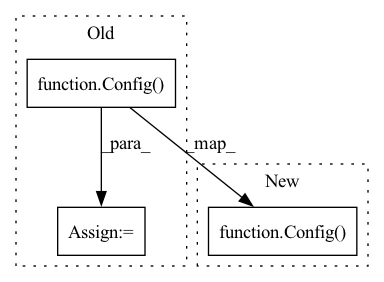

Pattern ID :4977
Before Change
:return: torch.Tensor of randomly generated negative triples
// Sample corrupted object entities
config = Config()
if negative_type == "uniform":
sampler = kge.util.sampler.KgeUniformSampler(
config, "negative_sampling", dataset)After Change
// Sample corrupted object entities
if negative_type == "uniform":
sampler = kge.util.sampler.KgeUniformSampler(
Config() , "negative_sampling", dataset
)
elif negative_type == "frequency":
sampler = kge.util.sampler.KgeFrequencySampler(In pattern: SUPERPATTERN
Frequency: 3
Non-data size: 3
Instances Fragment ID: 17415534
Project Name: tsafavi/codex
Commit Name: 2850d7f6f69e407dfce54568e98568bb65829c9e
Time: 2020-07-08
Author: tsafavi@umich.edu
File Name: scripts/tc.py
M Class Name: AnonimousClass
N Class Name: AnonimousClass
M Method Name: generate_neg_spo(4)
N Method Name: generate_neg_spo(4)
M Parent Class:
N Parent Class:
M File Name: scripts/tc.py
N File Name: scripts/tc.py
M Start Line: 98
M End Line: 105
N Start Line: 88
N End Line: 95
Before Change
conf_data_filepath = f"confs/datasets/{args.dataset}.yaml"
print("conf_data_filepath:", conf_data_filepath)
conf_data = Config(config_filepath=conf_data_filepath) ["dataset"]
storage_name = conf_data["storage_name"]
tar_filepath = os.path.join(pt_data_dir, storage_name + ".tar")
if not os.path.isfile(tar_filepath):
raise RuntimeError(f"Tar file for dataset at {tar_filepath} was not found")
After Change
conf_data_filepath = f"confs/datasets/{args.dataset}.yaml"
print("conf_data_filepath:", conf_data_filepath)
conf = Config(config_filepath=conf_data_filepath)
for dataset_key in ["dataset", "dataset_search", "dataset_eval"]:
if dataset_key in conf:
conf_data = conf[dataset_key]
Fragment ID: 17415539
Project Name: microsoft/archai
Commit Name: cec9c167805699f4590f3f81c8584e8c419bb0d8
Time: 2020-05-18
Author: shitals@microsoft.com
File Name: scripts/datasets/pt_install.py
M Class Name: AnonimousClass
N Class Name: AnonimousClass
M Method Name: main(0)
N Method Name: main(0)
M Parent Class:
N Parent Class:
M File Name: scripts/datasets/pt_install.py
N File Name: scripts/datasets/pt_install.py
M Start Line: 43
M End Line: 65
N Start Line: 62
N End Line: 74
Before Change
input_metadata = extract_input_shape(dataloader, Framework.TF2)
output_metadata = extract_output_shape(model, dataloader, Framework.TF2)
config = Config(
Framework.TF2,
model=model,
model_name=model_name,
dataloader=dataloader,
target_precisions=target_precisions,
max_workspace_size=max_workspace_size,
minimum_segment_size=minimum_segment_size,
workdir=workdir,
override_workdir=override_workdir,
keep_workdir=keep_workdir,
target_formats=target_formats,
sample_count=sample_count,
opset=opset,
atol=atol,
rtol=rtol,
save_data=save_data,
input_metadata=input_metadata,
output_metadata=output_metadata,
)
pipeline_manager = TFPipelineManager()
return pipeline_manager.build(config)
After Change
if sample_count is None:
sample_count = 100
config = Config(
Framework.TF2,
model=model,
model_name=model_name,
dataloader=dataloader,
target_precisions=target_precisions,
max_workspace_size=max_workspace_size,
minimum_segment_size=minimum_segment_size,
workdir=workdir,
override_workdir=override_workdir,
keep_workdir=keep_workdir,
target_formats=target_formats,
sample_count=sample_count,
opset=opset,
atol=atol,
rtol=rtol,
save_data=save_data,
)
pipeline_manager = TFPipelineManager()
return pipeline_manager.build(config)
Fragment ID: 17415541
Project Name: triton-inference-server/model_navigator
Commit Name: 3d1dcb4d73be04622ab7d541ea506a54557d95e5
Time: 2022-02-22
Author: ptarasiewicz@nvidia.com
File Name: model_navigator/framework_api/tensorflow.py
M Class Name: AnonimousClass
N Class Name: AnonimousClass
M Method Name: export(15)
N Method Name: export(15)
M Parent Class:
N Parent Class:
M File Name: model_navigator/framework_api/tensorflow.py
N File Name: model_navigator/framework_api/tensorflow.py
M Start Line: 69
M End Line: 91
N Start Line: 67
N End Line: 84